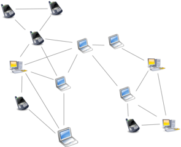

{kind=link}
Concept: Merkle Directed Acyclic Graph (DAG)
Like Git - Git Book

The InterPlanetary File System (IPFS) is a peer-to-peer distributed file system that seeks to connect all computing devices with the same system of files. In some ways, IPFS is similar to the Web, but IPFS could be seen as a single BitTorrent swarm, exchanging objects within one Git repository.
Initially designed by Juan Benet, developed since 2014 by Protocol Labs with help from the open-source community.
Alpha Release
Synthesis of existing concepts and technologies
Aims to become the next generation distributed web, replacing HTTP
Hash Function
Maps data of arbitrary size (message) to data of fixed size (hash)
Cryptographic Hash Function
Install using Homebrew for Mac OS X
brew install ipfsInitialize the local repository
ipfs init
ipfs cat /ipfs/QmS4ustL54uo8FzR9455qaxZwuMiUhyvMcX9Ba8nUH4uVv/readmeTake a picture and it to the local repository
ipfs add ~/Pictures/Photo\ Booth\ Library/Pictures/XXX.jpgCopy the resulting hash
(message = IPFS header + the image file)
Get the file back out (addressed by hash)
ipfs cat <hash> | open -f -a /Applications/Preview.appGet it from the global gateway?
curl https://ipfs.io/ipfs/<hash>
Connect to the swarm and become a peer in the global network
ipfs id
ipfs swarm peers
ipfs daemon
ipfs swam peersTry again to retrieve via the global gateway
curl https://ipfs.io/ipfs/<hash> | open -f -a /Applications/Preview.appOr grab a local copy
ipfs get <hash>ipfs cat /ipfs/QmS4ustL54uo8FzR9455qaxZwuMiUhyvMcX9Ba8nUH4uVv/quick-start
ipfs cat QmTKZgRNwDNZwHtJSjCp6r5FYefzpULfy37JvMt9DwvXse/video.mp4 | mplayer -
# Kill the daemon and play again, because cached in the local repo
ipfs cat QmTKZgRNwDNZwHtJSjCp6r5FYefzpULfy37JvMt9DwvXse/video.mp4 | mplayer -
# Remove from the local repo and try again
ipfs repo gc
ipfs cat QmTKZgRNwDNZwHtJSjCp6r5FYefzpULfy37JvMt9DwvXse/video.mp4 | mplayer -
# Restart the daemon to get the video againipfs mount
ls /ipfs/QmS4ustL54uo8FzR9455qaxZwuMiUhyvMcX9Ba8nUH4uVv
more /ipfs/QmS4ustL54uo8FzR9455qaxZwuMiUhyvMcX9Ba8nUH4uVv/aboutLike Git - Git Book
Traverse the graph for the quick start video folder
ipfs ls -v QmTKZgRNwDNZwHtJSjCp6r5FYefzpULfy37JvMt9DwvXse
ipfs ls -v QmRS3Ts9HGTPrNyvHc8GujKJRa3znuEANvE8eK8bdUDAGo
ipfs ls -v QmQkHpST7LL6zeLkVTFgTmSdbmnQaD8iWkutLhe9UHUvwq
ipfs ls -v Qma4yxBN8gMB3GotHuM2hhRJ3nZRXr1Pdrj9Fsh1hyKQQTOr visit the web interface to your local daemon
Different versions hash differently
InterPlanetary Naming System
Add a small amount of mutability to the permanent immutability that is IPFS
IPNS is a PKI namespace, where names are the hashes of public keys, and the private key enables publishing new (signed) values.
Te default name used is the node's own PeerID, which is the hash of its public key.
ipfs idAlso, utilize the DNS system with TXT records
dig TXT ipfs.io
ipfs dns ipfs.ioInterPlanetary Wayback (ipwb) - facilitates permanence and collaboration in web archives by disseminating the contents of WARC files into the IPFS network.
ipscend - Publish static web content
ipfs-cluster - Collective pinning and composition (Preservation requires copies)